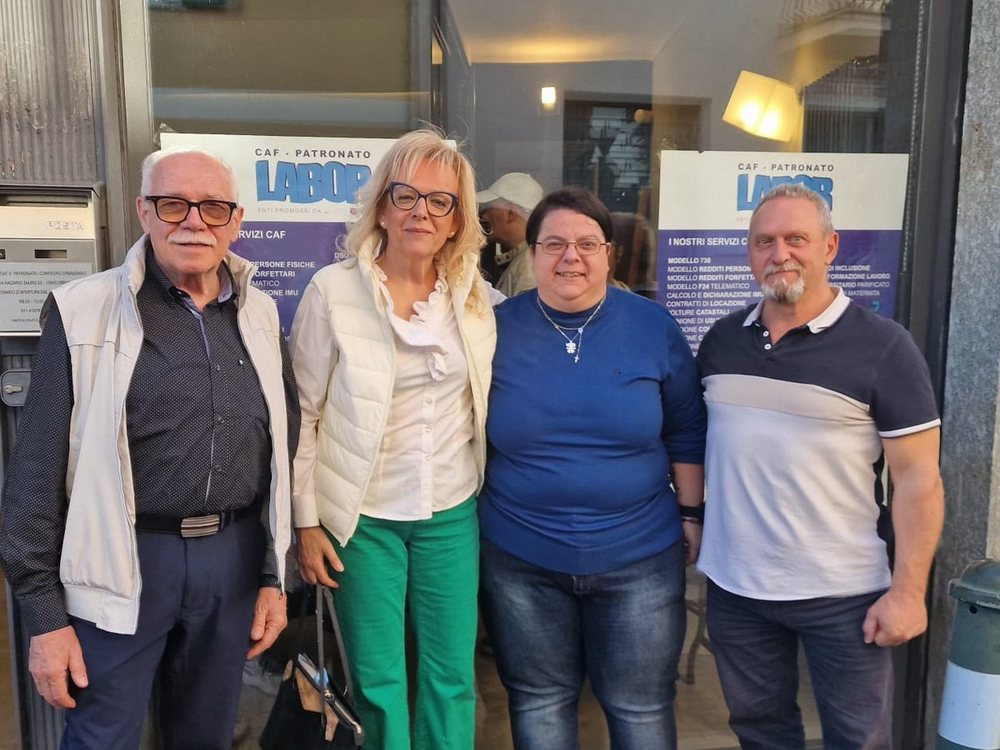

Scadenze di ottobre
Fino al 25 ottobre si possono ancora presentare le correzioni al 730: se ti sei accorto di una spesa dimenticata o di un dato sbagliato, si rimedia con il 730 integrativo. Portaci la documentazione e ce ne occupiamo noi.
Se invece la dichiarazione non l'hai proprio presentata, non è finita: c'è il modello Unico, che si presenta entro il 31 ottobre. Vale anche per chi ha partita IVA, redditi da affitto o redditi esteri. Vedi la pagina 730 e modello Unico o chiamaci.
I nostri servizi
Assistenza fiscale e previdenziale a Orbassano, senza doversi spostare a Torino. Per ogni pratica ti diciamo in anticipo quanto costa, prima di procedere.
- Veniamo noi da teCAF e patronato a domicilio, per chi non può spostarsi
- ISEEDichiarazione sostitutiva unica per bonus, rette e agevolazioni
- 730 e modello UnicoDichiarazione dei redditi, detrazioni e rimborsi
- Patronato e pensioniPensioni, NASpI, invalidità civile, Legge 104
- SuccessioniDichiarazione di successione e volture
- IMU e locazioniCalcolo IMU, contratti d'affitto, cedolare secca
- Pratiche agricoleFascicolo aziendale, PAC, INPS agricoltura
Sportello Confeuro per le aziende agricole
Siamo la sede di Orbassano di Confeuro, la confederazione degli agricoltori europei. Seguiamo fascicolo aziendale, domande PAC e AGEA, contributi INPS agricoltura e assunzione di manodopera agricola, senza che le aziende della cintura sud debbano rivolgersi a Torino.

Perché rivolgersi a noi
- Siamo in zona. Via Nazario Sauro 25, a Orbassano, con parcheggio nelle vicinanze.
- Costi chiari. Ti diciamo prima quanto costa la pratica: nessuna sorpresa alla fine.
- Ti diciamo cosa portare. Prima dell'appuntamento ricevi l'elenco esatto dei documenti, così si chiude tutto in una volta.
- Anche su WhatsApp. Per informazioni e prenotazioni, senza fare code al telefono.
Grazie a chi si è fidato
Abbiamo aperto il 1° aprile e oggi si chiude la nostra prima campagna fiscale. Sei mesi fa questo sportello non lo conosceva nessuno: eppure in tanti sono entrati e si sono seduti qui. Non solo per il 730: per l'ISEE, per una pensione, per la NASpI, per l'invalidità civile e la Legge 104, per una successione, per l'assegno unico, per il permesso di soggiorno, per un contratto di colf o badante, per le pratiche agricole. Pratiche che contano, e che si affidano solo a chi ci si fida.
Fidarsi di un ufficio appena aperto non è scontato: si potevano scegliere posti già avviati, con anni di storia alle spalle. Chi è venuto da noi ha fatto una scelta, e ce ne rendiamo conto. Grazie a chi ci ha dato fiducia, a chi è tornato una seconda volta e a chi ci ha mandato un parente o un vicino di casa.
Noi restiamo qui, tutto l'anno, per ogni pratica di cui avete bisogno.
Serviamo tutta la cintura sud
Riceviamo cittadini e lavoratori di Orbassano, Rivalta, Beinasco, Bruino, Piossasco, Volvera, Candiolo, Vinovo, None e Airasca.